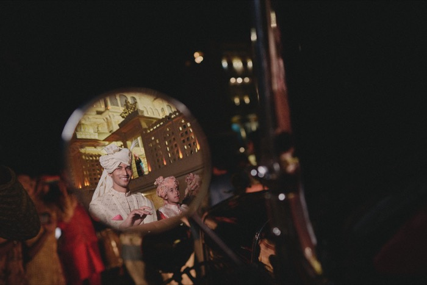

PORTFOLIO
Highlights
The ceremony, the portraits, the hours in between. Explore the celebrations as they happened, or take a closer look at the people and details within them.
GALLERY FEATURES
WEDDINGS & ENGAGEMENTS


GALLERY FEATURES
EDITORIAL
GALLERY FEATURES